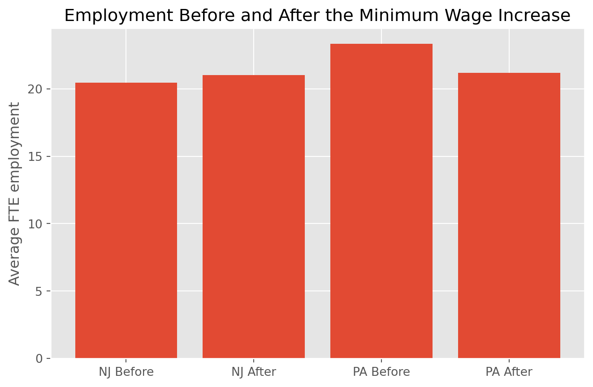

| stater | emptot | emptot2 | demp | gap | |
|---|---|---|---|---|---|
| count | 410.000 | 398.000 | 396.000 | 384.000 | 393.000 |
| mean | 0.807 | 20.999 | 21.054 | -0.070 | 0.084 |
| std | 0.395 | 9.750 | 9.094 | 9.022 | 0.077 |
| min | 0.000 | 5.000 | 0.000 | -41.500 | 0.000 |
| 25% | 1.000 | 14.562 | 14.500 | -4.000 | 0.000 |
| 50% | 1.000 | 19.500 | 20.500 | 0.000 | 0.063 |
| 75% | 1.000 | 24.500 | 26.500 | 4.000 | 0.188 |
| max | 1.000 | 85.000 | 60.500 | 34.000 | 0.188 |
Replicating Card and Krueger (1994)
Minimum Wages and Employment in New Jersey and Pennsylvania
Introduction
Do minimum wages reduce employment? This is one of the most famous questions in labor economics. Card and Krueger’s 1994 paper studies this question by comparing fast-food restaurants in New Jersey and eastern Pennsylvania around New Jersey’s 1992 minimum wage increase. Their empirical strategy is simple and powerful: New Jersey serves as the treated group, Pennsylvania serves as the comparison group, and employment is measured both before and after the policy change. The paper’s headline result is that employment did not fall in New Jersey relative to Pennsylvania after the minimum wage increased. In fact, their key difference-in-differences estimate is about 2.76 full-time-equivalent workers. This paper matters because it challenged the standard textbook prediction that raising the minimum wage must reduce employment. Using establishment-level data from 410 restaurants, Card and Krueger instead find no indication that the higher minimum wage reduced employment in this setting.
In this post, I do three things. First, I briefly explain the research design. Second, I replicate the paper’s main difference-in-differences result from Table 3. Third, I extend the analysis by presenting the result visually and estimating a regression version of the same design.
Research Design
The policy change is straightforward. On April 1, 1992, New Jersey increased its minimum wage from $4.25 to $5.05, while Pennsylvania did not change its minimum wage at that time. Card and Krueger surveyed fast-food restaurants in both states before and after the increase.
That creates a natural treatment-control setup:
- Treatment group: fast-food restaurants in New Jersey
- Control group: fast-food restaurants in eastern Pennsylvania
- Before period: first-wave survey
- After period: second-wave survey
The key outcome is full-time-equivalent employment, or FTE. In the paper, FTE employment is defined as the number of full-time workers plus managers plus one-half the number of part-time workers.
The core estimator is the difference-in-differences:
\[ \text{DID} = (\bar{Y}_{NJ,after} - \bar{Y}_{NJ,before}) - (\bar{Y}_{PA,after} - \bar{Y}_{PA,before}) \]
This compares the change in employment in New Jersey to the change in employment in Pennsylvania, removing broader forces that affect both states.
Loading and Preparing the Data
The public dataset is distributed as a flat file, so I reconstruct the variables using the definitions provided in the accompanying SAS check program. I hide the data-cleaning code here because it is useful for replication but not especially informative for a reader.
Before turning to the main estimate, it is useful to verify that the reconstructed employment values look sensible.
The reconstructed FTE employment values are in the right range. In the paper, average FTE employment before the policy change is about 20.4 in New Jersey and 23.3 in Pennsylvania. My reconstructed values line up closely with those reported summary statistics.
Replicating the Main Difference-in-Differences Result
I now calculate the average employment level before and after the policy change in each state and then compute the difference-in-differences estimate.
nj = df[df["nj"] == 1]
pa = df[df["nj"] == 0]
nj_before = nj["emptot"].mean()
nj_after = nj["emptot2"].mean()
pa_before = pa["emptot"].mean()
pa_after = pa["emptot2"].mean()
did_all = (nj_after - nj_before) - (pa_after - pa_before)
balanced = df[df["demp"].notna()].copy()
nj_b = balanced[balanced["nj"] == 1]
pa_b = balanced[balanced["nj"] == 0]
did_bal = (nj_b["emptot2"].mean() - nj_b["emptot"].mean()) - (
pa_b["emptot2"].mean() - pa_b["emptot"].mean()
)| Group | Period | Mean FTE | |
|---|---|---|---|
| 0 | NJ | Before | 20.439 |
| 1 | NJ | After | 21.027 |
| 2 | PA | Before | 23.331 |
| 3 | PA | After | 21.166 |
| Estimate | Value | |
|---|---|---|
| 0 | DID (all available observations) | 2.754 |
| 1 | DID (balanced sample) | 2.750 |
My replication produces a difference-in-differences estimate of about 2.754 using all available observations and about 2.750 in the balanced sample. These numbers match the paper’s Table 3 result almost exactly. Card and Krueger report a DID estimate of approximately 2.76 FTE workers.
This is the key empirical result of the paper. Employment rose slightly in New Jersey, while it fell in Pennsylvania, so New Jersey’s employment changed positively relative to the control group after the minimum wage increase.
Visualizing the Result
The table is clear, but a graph makes the intuition even easier to see.

The visual pattern reinforces the same message as the DID estimate. Employment rises modestly in New Jersey and falls in Pennsylvania. The paper’s conclusion does not come from one unusually large number but from the comparison of these two changes.
Extension: Regression Version of the Same Result
As an extension, I estimate a regression version of the same design. Card and Krueger also present reduced-form regressions in Table 4, where the dependent variable is the change in employment and the key explanatory variable is either a New Jersey dummy or a wage-gap measure.
I start with the simplest version, regressing the employment change on a New Jersey indicator.
reg_df = df[df["demp"].notna()].copy()
X = sm.add_constant(reg_df["nj"])
model = sm.OLS(reg_df["demp"], X).fit()
reg_table = pd.DataFrame({
"Coefficient": model.params.index,
"Estimate": model.params.values,
"Std. Error": model.bse.values,
"t value": model.tvalues.values,
"p value": model.pvalues.values
}).round(3)
reg_table| Coefficient | Estimate | Std. Error | t value | p value | |
|---|---|---|---|---|---|
| 0 | const | -2.283 | 1.036 | -2.205 | 0.028 |
| 1 | nj | 2.750 | 1.154 | 2.382 | 0.018 |
The coefficient on the New Jersey indicator is the regression analog of the difference-in-differences comparison. In the paper’s Table 4, the coefficient on the New Jersey dummy is about 2.33 in the simplest specification.
I then add the basic controls used in the SAS check file: chain dummies and an ownership indicator.
X2 = reg_df[["nj", "bk", "kfc", "roys", "co_owned"]].copy()
X2 = sm.add_constant(X2)
model2 = sm.OLS(reg_df["demp"], X2).fit()
reg_table2 = pd.DataFrame({
"Coefficient": model2.params.index,
"Estimate": model2.params.values,
"Std. Error": model2.bse.values,
"t value": model2.tvalues.values,
"p value": model2.pvalues.values
}).round(3)
reg_table2| Coefficient | Estimate | Std. Error | t value | p value | |
|---|---|---|---|---|---|
| 0 | const | -2.019 | 1.531 | -1.319 | 0.188 |
| 1 | nj | 2.785 | 1.156 | 2.410 | 0.016 |
| 2 | bk | 0.191 | 1.431 | 0.133 | 0.894 |
| 3 | kfc | 0.432 | 1.628 | 0.265 | 0.791 |
| 4 | roys | -2.397 | 1.637 | -1.465 | 0.144 |
| 5 | co_owned | 0.363 | 1.082 | 0.335 | 0.738 |
This extension shows that the result is not just a quirk of a single hand-calculated difference. It also appears in a regression framework, which is exactly how the paper presents its reduced-form models.
Interpretation
Why was this paper so influential? The answer is that the result goes against the simplest competitive-labor-market prediction. If the textbook model were the full story, a higher minimum wage should reduce employment. Instead, Card and Krueger find no evidence of a negative employment effect in this fast-food setting.
That does not mean minimum wages can never reduce employment in any setting. It does mean that the effect is an empirical question, not something that can be assumed from theory alone. One of the major contributions of this paper is showing how a clean quasi-experimental comparison can challenge a strong prior belief.
Conclusion
This replication successfully reproduces the core finding from Card and Krueger (1994). Using the public dataset, I obtain a difference-in-differences estimate of about 2.75 FTE workers, which is nearly identical to the paper’s reported estimate of 2.76.
I also extend the analysis by showing the result graphically and by estimating a regression version of the same design. Across all of these approaches, the conclusion is the same: in this case, the 1992 New Jersey minimum wage increase did not reduce fast-food employment relative to Pennsylvania.
References
Card, David and Alan B. Krueger (1994). “Minimum Wages and Employment:A Case Study of the Fast-Food Industry in New Jersey and Pennsylvania”